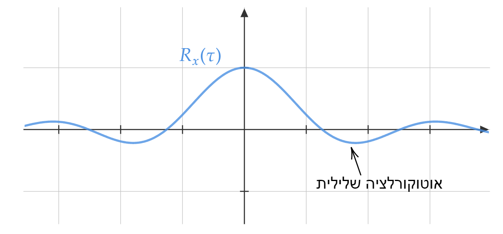

רעש במרחב התדר#
ראינו כבר עד עכשיו שאותות יותר נוח לנתח במרחב התדר. בעיקר כשיש לנו מערכת לינארית שהאות עובר דרכה.
אני מזכיר שמעכשיו האות שלנו הולך להיות מהצורה:
היינו רוצים לכתוב:
וזה אכן נכון אבל נשים לב שאין לנו נוסחה ל-\(n\left(t\right)\) כך שאנחנו לא באמת יכולים לחשב את \(\tilde{N}\left(\omega\right)\). עבור כל ריאליזציה נקבל משהו שונה.
מה כן יש לנו בכלל? אם נניח שהאות הוא WSS (wide sense stationary - סטציונרי במובן הרחב) אז יש לנו שתי תכונות של האות שאנחנו יכולים לעבוד איתן:
ממוצע - \(\mu_{x}\)
פונקציית אוטוקורלציה - \(R_{x}\left(\tau\right)\)
נשים לב שהאוטוקורלציה של האות מאוד מזכירה לנו קונבולוציה רק שלא הופכים את אחת הפונקציות:
PSD#
נצא מתוך האינטואיציה הזו ונתן שם לגודל \(\tilde{S}_{xx}\left(\omega\right)\) . נקרא לו Power Spectral Density או בקיצור PSD הוא הולך לומר לנו איך האנרגיה של האות האקראי שלנו מתחלקת בין תדרים שונים
אפשר לבדוק יחידות ולראות שה-PSD נמדד ב-\(\frac{W}{Hz}\) כלומר הספק לפורסת תדר ולכן זה נקרא צפיפות הספק ספקטרלית
בהמשך נעשה את החיבור לפורייה של הריאליזציה \(\tilde{X}\left(\omega\right)\)
דוגמא - רעש לבן
ניקח את הדוגמה הכי בסיסית שאנחנו יכולים לחשוב עליה. אוטוקורלציה של 0 בכל זמן חוץ מהראשית וממוצע 0:
יש כאן נקודה עדינה. אם האוטוקורלציה היא אינסוף ב\(\tau=0\) איך נראה המשתנה המקרי? אני לא אכנס לזה כאן. מוזמנים לקרוא את הבלוג הזה לדוגמא ואת הספר שהוא מפנה אליו בכל מקרה נמשיך עם זה ש שהאוטוקורלציה שלנו מוגדרת ואנחנו לא מפחדים!
אי ך יראה ה-PSD \(\tilde{S}_{xx}\left(\omega\right)\)?
זה כבר פשוט, צריך לעשות פורייה לדלתא ומקבלים:
כלומר פונקציה קבועה!
ה-PSD של רעש לבן הוא קבוע (לכן הוא נקרא לבן - הוא מכיל את כל התדרים)
Warning
אנחנו הולכים לדבר הרבה בהמשך על מה שנקרא רעש לבן גאוסייני. חשוב לראות שלא הנחנו כלום על ה-PDF של הרעש בכל זמן ומה שהיה חשוב כדי שהוא יהיה לבן זה שהוא יהיה חסר קורלציה.
יכולים להיות רעשים לבנים כל התפלגות שאתם יכולים לחשוב עליה
רעש לבן \(\Longleftrightarrow\) רעש עם אוטוקורלציה של \(R_{x}\left(\tau\right)=\sigma^{2}\delta\left(\tau\right)\)
דוגמא - רעש לבן בעל רוחב סרט סופי
ולכן:

נשים לב שיש מקומות בהן האוטוקורלציה שלילית! זה לא טעות ולא אותו הדבר כמו קורלציה 0 זה אומר שבממוצע אם הרעש בזמן 0 הוא חיובי אז הרעש בזמן \(\tau\) הוא שלילי (ולהפך)
Wiener–Khinchin theorem#
מה זה בכלל אומר לעשות פורייה ל-\(x\left(t\right)\) זה פורייה של אחת הריאליזציות. למה שעבור שתי ריאליזציות שונות לא נקבל תוצאות שונות?
אז התשובה היא שכן נקבל תוצאות שונות אבל לא בערך המוחלט (לפחות בממוצע).
נעשה קצת סדר בדברים:
הגודל \(\tilde{S}_{xx}\left(\omega\right)\) הוא לא משתנה מקרי. זה בגלל שהפונקציה \(R_{x}\left(\tau\right)\) היא פשוט פונקציה רגילה וידועה
לאומת זאת הגודל \(\tilde{X}\left(\omega\right)\) הוא כן משתנה מקרי ותלוי בריאליזציה של האות האקראי שלנו
זה אומר שמה שרשמנו נכון עבור אותות לא אקראיים. כדי לקשר בין השניים נצטרך לומר משהו על המתשנה האקראי \(\tilde{X}\left(\omega\right)\).
כאן מגיע המשפט הכי חשוב בניתוח ספקטרי של אותות אקראיים:
משפט וינר חינצ’ין
נתון אות אקראי \(x\left(t\right)\) סטציונרי במובן הרחב עם ממוצע \(\mu_{x}=0\)
נגדיר את הפונקציה הבאה:
כלומר הגבלה של האות האקראי שלנו לתחום \(\left[-\frac{T}{2},\frac{T}{2}\right]\)
אז:
נפרק את המשפט לאט לאט. בצד ימים יש לנו את הפונקציה \(\tilde{S}_{xx}\left(\omega\right)\) שאותה אנחנו מכירים והיא לא אות אקראי. בצד שמאל יש לנו את הגודל \(\left|\mathcal{F}\left[x_{T}\left(t\right)\right]\right|^{2}\) שהוא כן משתנה מקרי. אנחנו ניקח את התוכלת שלו \(\mathbb{E}\left[\left|\mathcal{F}\left[x_{T}\left(t\right)\right]\right|^{2}\right]\) זאת פונקציה של \(\omega,T\) ואם ניקח את הגבול של \(T\rightarrow\infty\) אז הצדדים שווים.
Warning
ממש חשוב לשים לב שהגבול הוא מחוץ לתוכלת ולא בתוך. כלומר לא לוקחים את התוכלת של הגבול אלא את הגבול של התוכלת
מסקנה חשובה שאנחנו רואים הוא שאנחנו לוקחים את הממוצע של הערך המוחלט בריבוע של הפורייה של הריאליזציה. האם יכול להיות שלשני אותות שונים יכול להיות אותו PSD אבל צורה שונה לחלוטין? התשובה היא כן. והסיבה היא שכל שני אותות שיש להם את אותה אוטוקורלציה יש להם את אותו PSD.
לא ניתן לקבוע מה ההתפלגות של הרעש בזמן מסויים מתוך ה-PSD אלא רק את האוטוקורלציה
מסקנה נוספת ונחמדה היא שה-PSD הוא תמיד חיובי
סינון רעש#
מה קורה לאות אקראי אם אנחנו מעבירים אותו דרך מסנן? היינו רוצים לדעת איך זה משפיע על ה-PSD. האות המסונן יהיה \(y\left(t\right)=\underset{\text{יארקא}-\text{תוא}}{\underbrace{x\left(t\right)}}\ast\underset{\text{ןנסמ}}{\underbrace{h\left(t\right)}}\)
אנחנו רוצעם לחשב את:
אוקי זה מסובך. אבל כאן מגיע משפט וינר חינצ’ין לעזרתנו!
קיבלנו תוצאה חשובה!
סינון רעש
אם יש לנו אות אקראי \(x\left(t\right)\) ואנחנו מעבירים אותו במערכת לינארית (מסנן) \(h\left(t\right)\)
נקבל כי ה-PSD של האות המסוננת הוא פשוט המכפלה של ה-PSD של האות המקורית וערך המוחלט של התמסורת בריבוע
Warning
אנחנו יודעים איך סינון רעש משפיע על ה-PSD אבל זה מאוד לא ברור מה הוא עושה ל-PDF של הרעש בכל זמן. ראינו שיש הרבה רעשים שונים עם אותו PSD ובפרט סינון של רעש יכול לשנות דרסטית את ה-PDF שלו.
לדוגמה אם ניקח רעש לבן (זמן לא רציף אלא דגום) עם התפלגות אחידה על הקטע \(\left[-1,1\right]\) אז סינון לינארי הוא פעולת קונבולוציה כלומר חיבור של הרבה משתנים שמתפלגים אחיד כל אחד כפול מספר אחר. אם ניקח קונבולוציה עם חלון (מיצוע לאורך זמן) אפילו נקבל ממש ממוצע.
מה קורה כשממצאים הרבה משתנים שמתפלגים אחיד? התוצאה שואפת להתפלגות גאוסיינית!
מקרה חריג הוא המקרה בו ההתפלגות היא גאוסיין. במקרה כזה כל סינון לינארי משאיר את ההתפלגות גאוסיינית
חיבור רעשים#
אם יש לנו שני רעשים אקראיים \(x_{1}\left(t\right),x_{2}\left(t\right)\) ואנחנו מחברים אותם. איך נראת האוטוקורלציה של החיבור?
האיבר האחרון נקרא הקרוסקורלציה. אם הרעשים הם לא תלויים אז הקרוסקורלציה שווה 0 ואז:
עבור אותות לא תלויים (0 קרוסקורלציה) \(R_{x+y}\left(\tau\right)=R_{x}\left(\tau\right)+R_{y}\left(\tau\right)\)
נשים לב שזה גם אומר שה-PSD מתחברים \(\tilde{S}_{x+y,x+y}\left(\omega\right)=\tilde{S}_{xx}\left(\omega\right)+\tilde{S}_{yy}\left(\omega\right)\)
הספק תדרי#
כבר ראינו שאנחנו מודדים את ההספק של הרעש לפי \(R_{x}\left(0\right)\). עבור רעש עם ממוצע \(\mu_{x}=0\). ראינו לפני רגע שאם האותות לא תלויים אז האוטוקורלציות מתחברות. וזה אומר שההספק מתחבר.
אם ההספק מתחבר מה קורה לאמפליטודות? אנחנו מודדים את האמפליטודות בעזרת \(\sigma_{x}=\sqrt{R_{x}\left(0\right)},\sigma_{y}=\sqrt{R_{y}\left(0\right)}\) זה אומר ש:
או באופן כללי אם מחברים \(N\) רעשים שונים:
מה יקרה אם נשעה N מדידות שונות לאותו האות ונמצע אותן? האמפליטודה של חיבור הרעשים תהיה רק \(\sqrt{N}\) חזקה יותר לאומת האמפליטודה של האות שתגדל ב-\(N\). ולכן בממוצע האות ישאר כמו שהוא אבל הרעש יחלש (באמפליטודה) ב\(\frac{1}{\sqrt{N}}\)